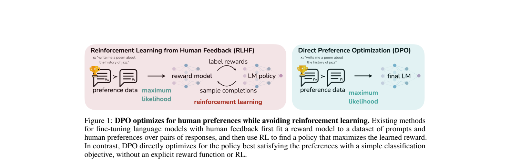

A 60-minute active study session · post-training
From RLHF Pipelines to One Loss
Direct Preference Optimization turns pairwise preferences into a policy-training objective, without fitting a separate reward model or running reinforcement learning in the fine-tuning loop.
1. The problem: preferences are relative
A prompt can have many plausible completions. Asking a labeler for a calibrated numerical reward is hard; asking which of two completions is better is often easier. Let yw be the preferred completion and yl the rejected one for prompt x.
Classic RLHF fits a reward model from these pairs, then trains a policy to maximize that reward while staying near a reference language model. The paper asks a sharper question: if the desired policy and the reward are mathematically linked, must we build the reward model as a separate object?
2. From the original pipeline to DPO
In the paper's RLHF pipeline, SFT comes first; then response pairs are sampled, labeled, and used to fit a reward model; then RL fine-tunes the policy. DPO removes the separately trained reward model and the on-policy RL update, but it still needs offline preference pairs and a frozen reference policy.

3. Notation: keep the two models separate
| Symbol | Meaning | Intuition |
|---|---|---|
| πθ(y|x) | Trainable policy | The model being moved by DPO. |
| πref(y|x) | Frozen reference policy | A before-photo and ruler: how plausible was the completion before the update? |
| r(x,y) | Reward | Latent quantity that would explain the preferences. |
| β > 0 | KL/reward trade-off scale | Sets the scale of the policy-to-reward mapping and the logistic margin. |
| σ(z) | 1/(1+e-z) | Maps a score difference to a preference probability. |
The starting point is KL-regularized reward maximization. It favors high reward while penalizing a policy that drifts from πref. In everyday terms, the reference is a safety rail: move toward better answers, but do not suddenly turn the model into a stranger. The paper shows its optimal policy has a particular exponential form. Rearranging it gives:
That last term, the partition function Z(x), depends on the prompt but not on which completion we compare. Think of it as a shared conversion factor applied to every answer to the same prompt: it matters for absolute scores, but disappears when we ask only which of two answers is better. This is the escape hatch.
4. Before cancellation: the objective the paper starts with
DPO is derived from KL-regularized reward maximization, not introduced as an arbitrary classifier. For each prompt, the policy seeks reward while paying for departure from the reference:
The KL term matters: it discourages movement into regions where a reward model is inaccurate, preserves diversity, and limits collapse onto one high-reward-looking answer. A useful image is a rubber band tied to the reference model: reward pulls toward better answers; KL resists an implausibly large jump. The optimal policy is a reference-weighted Boltzmann distribution:
For a two-completion example, let πref(A)=0.8, πref(B)=0.2, r(A)=0, r(B)=1, and β=1. The unnormalized weights are 0.8 and 0.2e≈0.544, so Z≈1.344 and the optimum is π(A)≈0.595, π(B)≈0.405. Even though B has the better reward, its probability rises only from 0.20 to about 0.41; reward tilts the reference rather than erasing it. The normalizer Z is difficult over all text continuations, which is why the next derivation is valuable.
5. Derivation trace: make the nuisance term disappear
The Bradley-Terry preference model says that the chance of preferring yw over yl is σ(r(x,yw) - r(x,yl)). This is just a soft version of “higher score wins”: a larger score gap means a more confident predicted preference. Substitute the expression above twice.
So preference comparisons need only a relative log-probability improvement: how much the current policy favors each completion compared with the reference. Maximum likelihood over many labeled pairs yields the DPO loss:
Winner improves, loser does not
Suppose the winner’s log probability rises by 0.6 versus reference, and the loser’s rises by 0.1. Read “rises” as “the new model gives it more support than the old model did.” The margin is 0.5: the winner gained 0.5 more support. With β = 1, the model assigns σ(0.5) ≈ 0.62 probability to the observed preference: directionally right, but not confident.
Both answers get more likely
If both log-probability improvements are +0.6, their difference is zero. The DPO preference probability is 0.5. DPO does not reward indiscriminate probability inflation; it rewards relative movement toward the chosen answer.
6. Make the loss executable for a language model
For an LM, a completion log-probability is the sum of conditional token log-probabilities: log π(y|x)=Σtlog π(yt|x,y<t). Think of each next token as adding a small entry to a running confidence ledger; the completion score is the total. DPO compares whole completions, not just their last tokens.
| Completion | Current sequence log-prob | Reference sequence log-prob | Log-ratio |
|---|---|---|---|
| Chosen completion | -1.5 | -1.9 | +0.4 |
| Rejected completion | -2.0 | -1.6 | -0.4 |
With β=0.5, the margin is 0.5×(0.4-(-0.4))=0.4; σ(0.4)≈0.60 and the per-pair loss is about 0.51. Predict before calculating: if only the reference values change, can the loss change? Yes. The reference defines which probability shift counts as improvement.
The gradient supplies an adaptive correction
The paper's gradient raises the chosen log-probability and lowers the rejected one, weighted by σ(r̂θ(x,yl)-r̂θ(x,yw))=σ(-margin). Like a tutor spending more time on a clear mistake than on an already-correct answer, a well-ranked pair with margin +2 has weight about 0.12; a wrongly ranked pair with margin -2 has weight about 0.88. This continuous weighting is why DPO is not just chosen/rejected unlikelihood training.
7. Instrument: inspect one DPO preference pair
Before moving the controls, predict: if the current policy over-promotes the rejected answer relative to the reference, should the loss be high or low?
Static reading: at the default setting, the chosen completion has a 0.50 larger improvement than the rejected completion. With β = 1 this is a positive, but imperfect, preference margin.
Reveal the prediction
High. If the rejected completion has the larger relative improvement, the margin is negative, σ(margin) is below 0.5, and -log σ(margin) increases. Gradient descent responds by raising the chosen likelihood and lowering the rejected likelihood.
8. What the update is really doing
The paper differentiates the loss and finds a useful qualitative story: each pair pushes up log π(yw|x) and pushes down log π(yl|x). Pairs that the implicit reward currently orders wrongly receive more weight. This is why “just maximize the chosen/rejected probability ratio” is not the same algorithm: the logistic form supplies a data-dependent weight.
Misconception check
“DPO removes the reference model.”
No. It removes the separately trained reward model and the RL loop, but the frozen reference policy appears inside every log ratio. It anchors the comparison.
“DPO simply teaches the policy to copy every chosen response.”
No. A pair asks for a relative ordering. The loss judges changes relative to πref, and it explicitly contrasts chosen against rejected completions.
“The derivation proves DPO works for arbitrary preference data.”
No. The central equivalence uses a Bradley-Terry-style preference model and the KL-regularized objective. The paper also assumes appropriate support and a positive β.
9. What the original experiments actually test
The paper separates controlled optimization from real preference data. Controlled sentiment generation uses IMDb prefixes, GPT-2-large, and classifier-created preference pairs, so reward and sequence-level KL are measurable directly. TL;DR summarization evaluates GPT-J policies against reference summaries with GPT-4 as a proxy judge. Single-turn dialogue uses Anthropic Helpful and Harmless data and Pythia-2.8B; the experiments reach models up to 6B parameters.
| Paper result | Scope | Interpretation |
|---|---|---|
| Best reward-KL frontier | Figure 2 left, controlled IMDb sentiment; reported to exceed PPO even with ground-truth rewards. | Evidence about the stated constrained objective, not universal quality. |
| About 61% vs 57% | TL;DR, DPO at temperature 0 versus PPO's best reported temperature-0 result; GPT-4 judge. | Task-, temperature-, and evaluator-specific evidence. |
| 0.36/0.31 vs 0.26/0.23 | Table 1: DPO/PPO GPT-4 win rate against CNN/DailyMail references at temperatures 0/0.25. | Initial out-of-distribution evidence, not a guarantee. |
| 58% DPO over PPO | Human TL;DR comparison at selected settings, Table 2. | A check on the GPT-4 proxy; the paper still notes judge-prompt effects. |
Interpretation exercise: Why is “61%” not enough by itself?
It is a win rate under a particular task, baseline, temperature, and judging prompt. The paper observes that a simple GPT-4 prompt favored longer repetitive summaries, and uses a concise prompt for its main results.
10. Reward equivalence, assumptions, and limits
Preferences cannot identify an absolute reward. If r(x,y) and r'(x,y) differ only by a prompt-dependent f(x), Bradley-Terry and Plackett-Luce comparisons are unchanged because the term cancels within a pair. The paper shows those equivalent rewards also induce the same KL-regularized optimal policy.
DPO selects a normalized representative: r̂θ(x,y)=β log(πθ(y|x)/πref(y|x)). That is the precise sense in which the language model is “secretly” a reward model; it does not find a unique absolute human reward.
DPO removes on-policy sampling during its optimization loop, not sampling altogether. Preference completions must already exist, and every update needs policy and frozen-reference log-probabilities.
11. Evidence and scope
The authors evaluate DPO on sentiment control, TL;DR summarization, and single-turn dialogue with models up to 6B parameters. They report that DPO matches or exceeds their PPO-based RLHF baselines on these settings, with stronger sentiment control and improved response quality in their summarization and dialogue evaluations. Treat this as scoped empirical evidence, not a universal ordering of alignment methods.
No separate reward-model fitting stage; no policy sampling during the DPO fine-tuning loop; and a single classification-style objective on an offline preference dataset.
Preference labels can be biased or underspecified. The paper asks how DPO generalizes out of distribution, how reward over-optimization appears, and how it scales beyond the tested 6B-parameter models. Its automated evaluation is also prompt-sensitive.
12. Active recall
Why does the partition function disappear?
Bradley-Terry uses a difference of two rewards for the same prompt. The prompt-only term β log Z(x) appears in both rewards and cancels.
What is the one scalar that DPO feeds into the sigmoid?
β times the difference between the chosen and rejected log probability ratios: log(πθ/πref) for the chosen answer minus the same quantity for the rejected answer.
What does a negative margin diagnose?
Relative to the reference, the policy has improved the rejected completion more than the chosen completion. The loss is high and the gradient corrects that ordering.
What does DPO eliminate, and what does it retain?
It eliminates the explicit reward model and RL policy-optimization loop. It retains a reference policy, offline preference pairs, a statistical preference model, and ordinary gradient-based policy training.
Connect it to your mental map
This is the first node in the collection’s post-training branch. Keep three neighboring ideas distinct: pretraining learns broad next-token statistics; supervised fine-tuning imitates demonstrations; preference optimization learns a relative ordering among possible completions. DPO links that last branch back to probabilistic classification and to KL regularization: a policy can encode the reward difference needed for a pairwise choice.
Takeaway
A DPO update does not need to name a reward model. It asks one precise question: compared with a stable reference, did the policy move probability toward the response people chose and away from the one they rejected? Under the paper’s preference model, that relative movement is enough to train the policy directly.